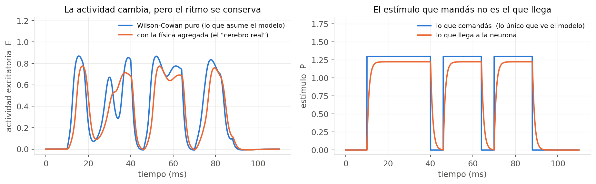
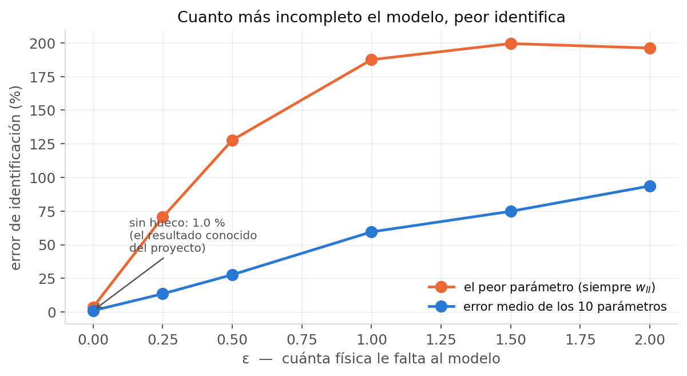
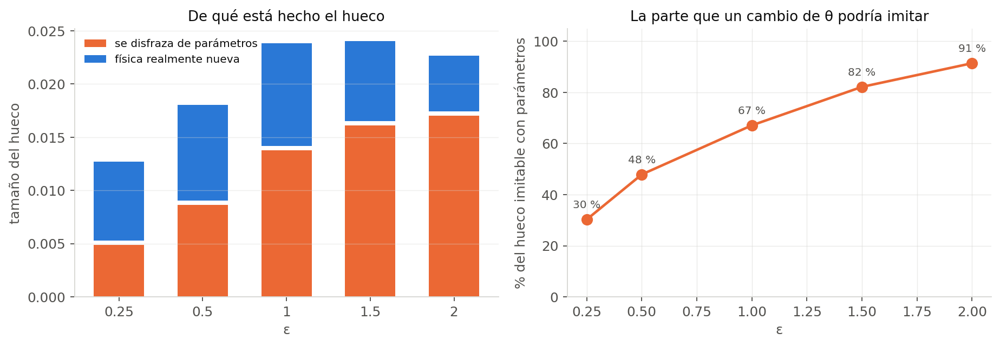
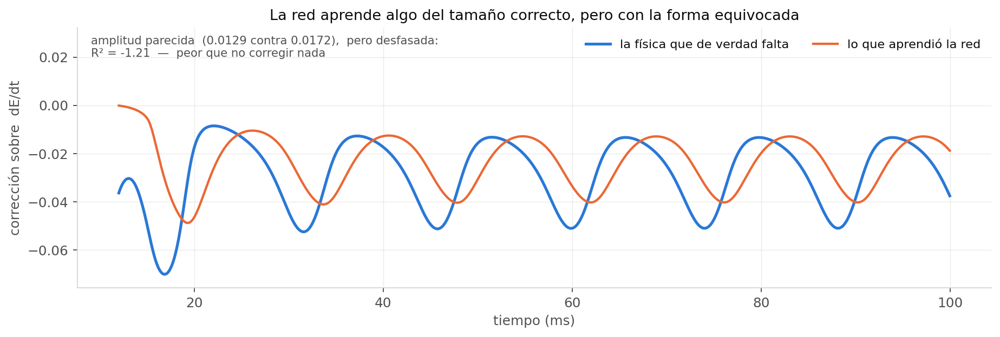
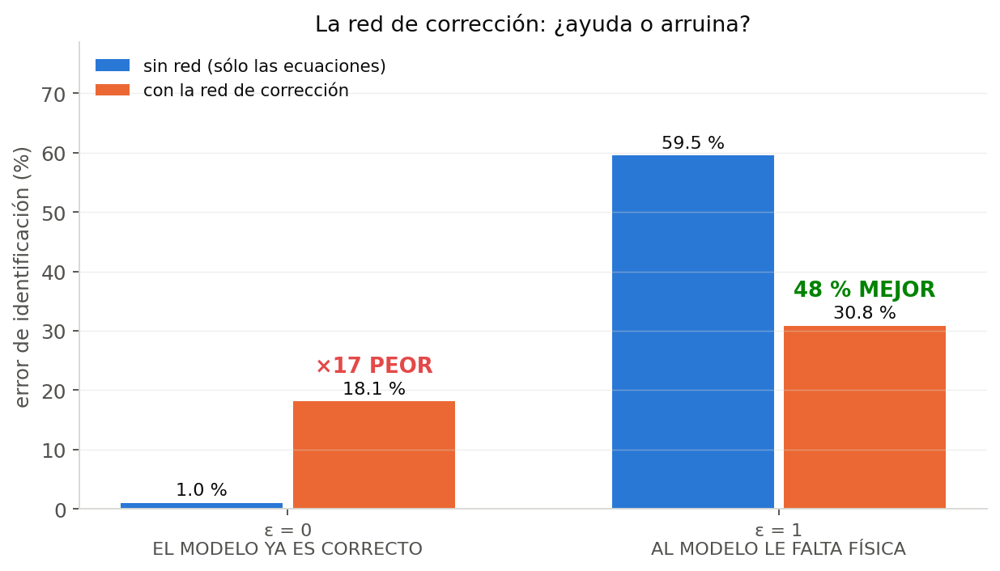
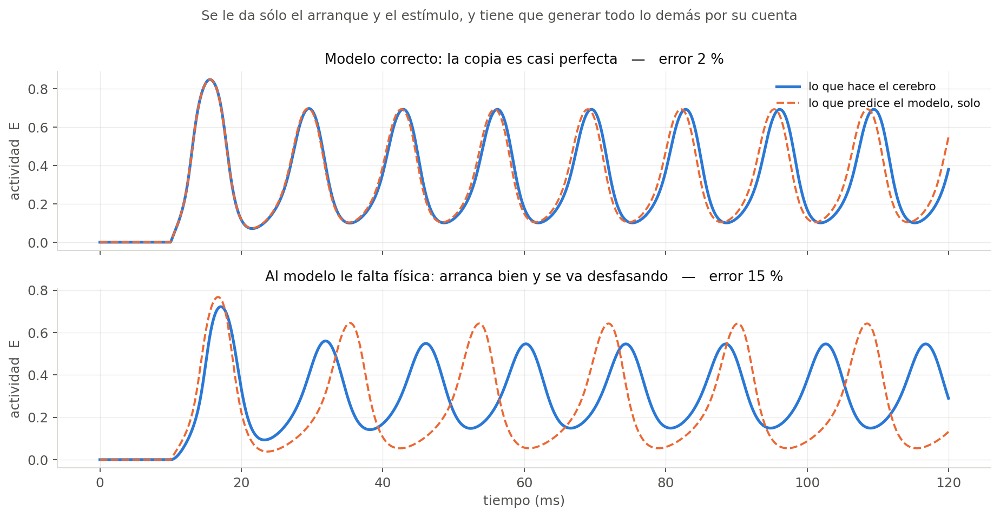
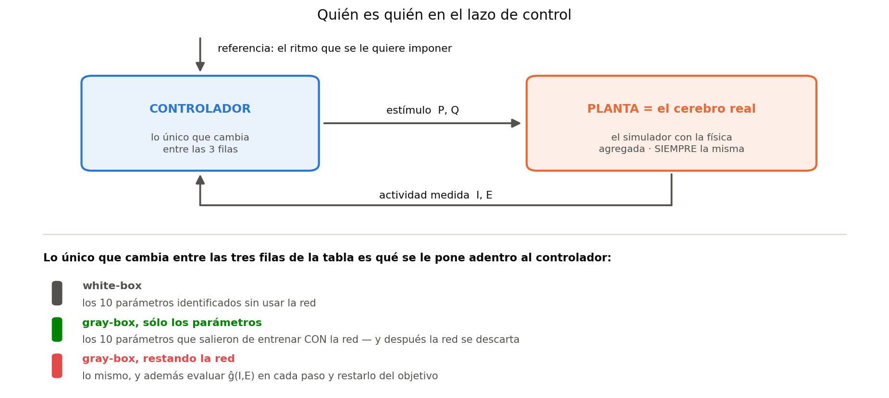
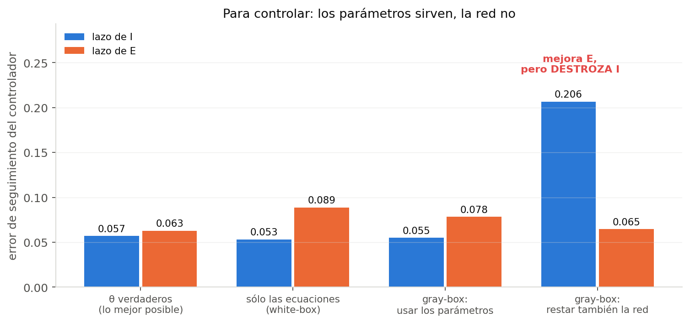

Qué hicimos, qué salió, y qué significa
La idea en una frase. Hasta ahora identificábamos los parámetros de Wilson–Cowan con un modelo que era exactamente igual al simulador que generaba los datos. Le rompimos esa igualdad a propósito, y medimos qué pasa cuando le agregamos una red neuronal para tapar el agujero.
Los términos que van a aparecer todo el tiempo.
Planta — El sistema real. En nuestro caso, el simulador. Es lo que genera los datos.
Modelo — Nuestra hipótesis sobre cómo funciona la planta. Es lo que entrenamos.
Mismatch — El hueco entre los dos: física que la planta tiene y el modelo no. Se escribe Δf. Mismatch estructural significa que le erramos a la forma de la ecuación, no a un número: ningún ajuste de parámetros lo arregla.
White-box — Modelo hecho sólo de ecuaciones escritas por nosotros. Es el enfoque de siempre del proyecto.
Gray-box — Ecuaciones nuestras más una red neuronal que tapa lo que las ecuaciones no explican. Gris = mitad blanco (interpretable), mitad negro.
θ (theta) — Los 10 parámetros de Wilson–Cowan: pesos sinápticos, umbrales, constantes de tiempo. Es lo que queremos identificar, y tienen significado biológico.
gφ — La red neuronal que hace de corrección. Un MLP chiquito: 2 capas, 32 neuronas ocultas.
ε (épsilon) — La perilla que controla cuánto mismatch hay. ε = 0: ninguno. ε = 1: el nivel nominal.
P, Q — El estímulo externo que le mandamos a cada población (P a la excitatoria, Q a la inhibitoria).
MSE — Error cuadrático medio. Mide qué tan bien el modelo reproduce las trayectorias. Es el error de ajuste.
R² — Mide qué tan parecidas son dos funciones. 1 = idénticas, 0 = tan bueno como predecir el promedio, negativo = peor que el promedio.
El proyecto identifica los 10 parámetros con un error del 1 %. Excelente número — pero con trampa.
El simulador que genera los datos y el modelo que entrenamos eran exactamente las mismas ecuaciones. O sea que el problema que resolvíamos era: “dado que el modelo es perfecto, encontrale los parámetros”. Legítimo y difícil, pero no es el problema real. En un experimento de verdad tu modelo del cerebro siempre está incompleto.
Y tenía una consecuencia concreta en el código: el término de corrección gφ existía desde el principio y nunca se había usado. No por olvido: porque no tenía nada que aprender. Sumarle una red a un modelo que ya es exacto sólo puede empeorar las cosas.
Le agregamos al simulador dos pedazos de física que el modelo no tiene. Importante: al simulador, no al modelo. La red nunca ve estas ecuaciones, no sabe que existen.
dI/dt = (1/τi) · ( −I + (1 − r·I) · Si(ui) − ki )
S es la sigmoidea: la función con forma de S que convierte “cuánta entrada recibe la población” en “qué fracción de neuronas dispara”. El factor nuevo dice que una neurona que acaba de disparar no puede volver a disparar enseguida, así que la fracción disponible no es 1 sino (1 − r·I).
No lo inventamos. Es el Wilson–Cowan original de 1972. La versión reducida que usa todo el mundo lo descarta por simplicidad. Nosotros lo deshicimos, que es mucho más defendible que inventar una perturbación arbitraria.
dPlag/dt = (Pcmd − Plag) / τact Pef = A · tanh( Plag / A )
En optogenética vos comandás intensidad de luz. Lo que la neurona recibe llega tarde (el canal tarda en abrirse) y saturado (a mucha luz ya no responde más). El modelo asume que son iguales.
Ésta es la difícil: rompe el supuesto de que el estímulo es perfectamente conocido, que es justo el supuesto que ancla la escala de los parámetros.

¿Por qué no le agregamos estos términos al modelo y listo? Porque en un experimento real no sabés qué te falta — si lo supieras, lo agregarías. Todo el montaje existe para estudiar qué pasa cuando no lo sabés. Y como nosotros fabricamos el simulador, conocemos el Δf exacto y podemos hacer trampa sólo para evaluar: preguntarnos si la red aprendió la física correcta. Casi ningún trabajo de este tipo puede responder eso.
ẋ = fWC(x, P, Q; θ) + gφ(x)
backbone: nuestras ecuaciones, 10 parámetros interpretables + corrección: la red, no interpretable
La red es un aproximador universal sobre el mismo dominio que las ecuaciones. Entonces compite con los parámetros: para cualquier θ equivocado existe una red que compensa. El síntoma esperado era traicionero: el ajuste mejora y los parámetros empeoran. Por eso siempre reportamos las dos métricas juntas.

Proyectamos el Δf verdadero sobre lo que un cambio de parámetros podría hacer. En ε = 1: el 67 % de la física faltante es indistinguible de mover los 10 parámetros.

Esto reordena todo:
| ε = 1 | error de θ | MSE test | redundante con θ |
|---|---|---|---|
| white-box (sin red) | 59,5 % | 1,06e-2 | — |
| red libre | 35,9 % | 8,51e-3 | 0,918 |
| red restringida al estado | 35,6 % | 9,63e-3 | 0,941 |
| + regularización suave | 30,8 % | 9,26e-3 | 0,914 |
| + regularización fuerte | 44,6 % | 1,06e-2 | 0,385 |
La predicción de la trampa era equivocada. Esperábamos que mejorara el ajuste y empeorara los parámetros. Pasó lo contrario: mejora las dos cosas, de 59,5 % a ~31 %. Se recupera casi la mitad del daño.
¿Por qué? Sin la red, el white-box está obligado a deformar θ para absorber física que no puede representar. Darle a esa física otro lugar donde ir libera a los parámetros.

O sea: ayuda, pero no por la razón que uno querría. No está aprendiendo la física faltante — está haciendo un reacomodamiento parecido a mover parámetros que resulta beneficioso.

Una corrección neuronal es dañina justo cuando tu modelo ya es correcto, y útil justo cuando no lo es. Y el problema práctico: mirando el ajuste no podés distinguir en cuál de los dos casos estás, porque en ε = 0 el MSE mejora igual. Hace falta una métrica que no dependa del ajuste.
Todo lo anterior mira los parámetros. Ésta es la otra pregunta: si el modelo aprendido, soltado a rodar solo, reproduce la actividad del cerebro simulado. La prueba es exigente — se le da sólo el arranque y el estímulo, y tiene que generar los 200 ms enteros por su cuenta, sobre estímulos que no vio al entrenar.

| situación | error de trayectoria | correlación |
|---|---|---|
| sin hueco (modelo = planta) | 2,0 % | 0,99 |
| con hueco, white-box | 15,1 % | 0,82 |
| con hueco, gray-box | 14,0 % | 0,85 |
El dato más informativo: la corrección recupera casi la mitad del error de los parámetros y casi nada del error de trayectoria (15,1 % → 14,0 %). Ayuda a identificar, no a predecir. Es consistente con lo anterior: mueve la responsabilidad de sitio sin agregar física.
Primero, quién es quién — porque acá es fácil confundirse. En este experimento la planta es siempre la misma: el simulador real con la física agregada, o sea el “cerebro”. El modelo aprendido no reemplaza al cerebro. Lo único que cambia entre las tres filas es con qué conocimiento se arma el controlador.

El controlador cancela la no linealidad del cerebro invirtiéndola. Hace tres pasos: calcula cuánto tiene que dar la sigmoidea, la invierte para saber cuánta entrada total necesita la población, y le resta el acoplamiento interno para saber qué estímulo externo comandar. Los 10 parámetros aparecen en esos tres pasos — sin ellos no puede hacer ninguno.
Usar sólo los parámetros — El controlador se arma con los θ̂ que salieron del entrenamiento gray-box. Son mejores que los del white-box porque durante el entrenamiento la red absorbió parte del hueco y liberó a los parámetros. Pero a la hora de controlar, la red se tira: no participa. El gray-box se usó como andamio.
Restar también la red — Además de eso, en cada paso se evalúa ĝ(I,E) y se le resta al objetivo. Sale de una cuenta corta: si tu modelo dice que la derivada es (1/τ)(−I + S − k) + ĝ y querés que el resultado sea (1/τ)(−I + Ulti), despejando queda S = Ulti + k − τ·ĝ. O sea: alcanza con correr el objetivo de la sigmoidea por −τ·ĝ. Es una línea de código, y en teoría compensa exactamente el término extra.

La receta: usá los parámetros del gray-box, no uses la red para cancelar. Y el motivo de fondo: la resta es punto a punto, así que necesita que ĝ sea la física faltante de verdad. Que ajuste bien los datos globalmente no alcanza — son dos requisitos distintos.
Después de entrenar tenés dos cosas: los 10 números y la red. Qué hacés con ellas depende del objetivo.
| Si querés… | Hacés… |
|---|---|
| Los parámetros, porque significan algo biológico | Entrenás con la red prendida, te quedás con los números, tirás la red. La red fue un andamio. Funciona |
| Predecir trayectorias | Dejás la red puesta: el modelo completo predice apenas mejor. Ojo: los números pueden estar arruinados y no te enterás. |
| Controlar el sistema | Usás los números, tirás la red. Restar la red rompe un canal. |
Tres frentes que quedaron abiertos y ya se cerraron o avanzaron.
Apareció que el integrador que usan los scripts del proyecto acumula un error de ~1,5e-2, del mismo orden que el ruido de los barridos de robustez (σ = 0,01). Como es un error sistemático, promediar no lo elimina — había que descartar que estuviera contaminando un resultado ya establecido.
| integrador | error de θ con σ=0 | error de θ con σ=0,01 |
|---|---|---|
| histórico (el que se usa hoy) | 0,54 % | 8,14 % |
| paso fijo (30× más preciso) | 1,05 % | 8,39 % |
| referencia de alta precisión | 1,07 % | 8,41 % |
No contamina. Al nivel de ruido que importa los tres coinciden dentro del 3 %. Los barridos de robustez son válidos y no hay que rehacerlos.
El 67 % imitable no es una constante: depende de la trayectoria, y la trayectoria la fija el estímulo. Optimizando la forma del estímulo a igual amplitud media, baja del 71 % al 59,5 %.
Pero apareció un matiz que cambia la receta. Un dataset con 20 variantes de ese único estímulo diseñado da 73,9 % — peor que el de librería (67,1 %). La razón es instructiva: cuando se exige un único cambio de parámetros que explique todos los escenarios a la vez, la degeneración se rompe sola si los escenarios son distintos entre sí. La diversidad pesa más que la calidad de cada uno.
Hay que diseñar el experimento entero, no la señal: elegir un conjunto de estímulos cuyas degeneraciones no se solapen. Es diseño de experimentos con una función objetivo nueva — separar la red de los parámetros, en vez de sólo informar sobre los parámetros.
Como la red no sirve para cancelar, probamos reemplazarla por 3 parámetros con significado físico (refractariedad y saturación) en vez de ~1000 pesos. Ventaja: la cancelación en el controlador vuelve a ser exacta.
Falló, y el diagnóstico es lo interesante: el optimizador encuentra un ajuste mejor que el de la física verdadera con parámetros equivocados. ¿Por qué? A la corrección le falta una componente — el retardo del actuador — y usa las que sí tiene para compensar la que le falta.
La confirmación es limpia: sobre una planta que tiene exactamente la forma que la corrección puede representar, recupera la saturación con 1,3 % de error y la pérdida cae 145 veces.
La corrección estructurada es identificable y precisa si la forma está completa, y engañosa si le falta una pieza. Es la misma lección de antes, un nivel más abajo. Advertencia práctica: un gray-box estructurado que ajusta bien no garantiza que los parámetros físicos que reporta sean correctos.
Y todos sólo se pueden obtener en un montaje donde el Δf verdadero es conocido — que es exactamente la ventaja de haber construido la incertidumbre a mano en vez de tomarla de datos reales.
Todos los números salen de corridas reales del repositorio
(results/uncertainty/), reproducibles con
bash scripts/run_uncertainty_all.sh. Detalle completo en
docs/graybox_manual_completo.md. · 38 tests automáticos en verde.